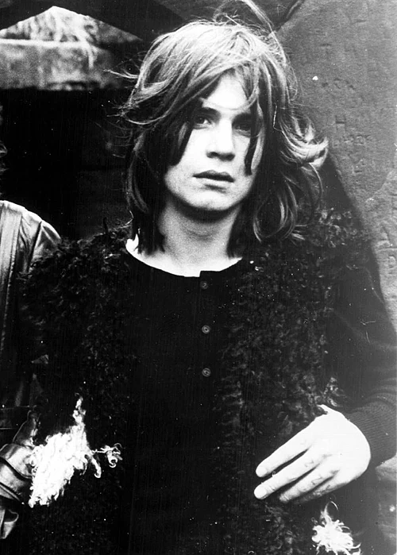

Ozzy Osbourne

John Michael "Ozzy" Osbourne (3 December 1948 – 22 July 2025) was an English singer, songwriter, and media personality. Dubbed the "Prince of Darkness",[1][2] he co-founded the heavy metal band Black Sabbath in 1968 and rose to prominence in the 1970s as their lead vocalist. Black Sabbath is widely credited as a pioneer of heavy metal music. He performed on the band's first eight studio albums, including Black Sabbath, Paranoid (both 1970) and Master of Reality (1971), before he was terminated in 1979 due to his problems with alcohol and other drugs.
Osbourne began a solo career in the 1980s after being replaced by Ronnie James Dio and formed his band with Randy Rhoads and Bob Daisley, with whom he recorded the albums Blizzard of Ozz (1980) and Diary of a Madman (1981). Throughout the decade, he drew controversy for his antics both onstage and offstage, and was accused of promoting Satanism by the Christian right. Overall, Osbourne released thirteen solo studio albums, the first seven of which were certified multi-platinum in the United States. He reunited with Black Sabbath on several occasions. He rejoined from 1997 to 2005, and again in 2012; during this second reunion, he sang on the band's last studio album, 13 (2013), before they embarked on a farewell tour that ended in 2017. On 5 July 2025, Osbourne performed at the Back to the Beginning concert in Birmingham, having announced that it would be his final performance due to health issues. He died 17 days later.